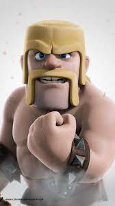
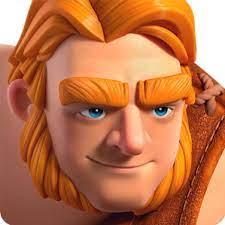
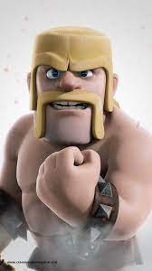
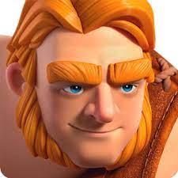

Clash of Clans adalah permainan video strategi seluler freemium yang dikembangkan dan diterbitkan oleh pengembang permainan Finlandia, Supercell. Permainan ini dirilis untuk platform iOS pada 2 Agustus 2012, dan di Google Play untuk Android pada 7 Oktober 2013.
Permainan ini berlatarkan tema fantasi[3] dunia persistent[4] dimana pemainnya adalah kepala desa. Clash of Clans menugaskan pemain untuk membangun desa mereka sendiri menggunakan sumber daya yang diperoleh dari menyerang desa pemain lain atau memproduksinya di desa sendiri. Untuk menyerang, pemain melatih berbagai jenis pasukan menggunakan sumber daya. Sumber daya utamanya adalah emas, elixir dan elixir hitam. Pemain dapat bergabung untuk membuat klan, grup hingga lima puluh orang, yang kemudian dapat berpartisipasi dalam Perang Klan bersama, menyumbang dan menerima pasukan, dan mengobrol satu sama lain.
Empat permainan spin-off di dunia Clash of Clans yang sama dikembangkan oleh Supercell. Pertama, Clash Royale, dirilis pada 2016.[5] Tiga lainnya, Clash Quest, Clash Minis, dan Clash Heroes, diumumkan pada bulan April 2021.[6][7]